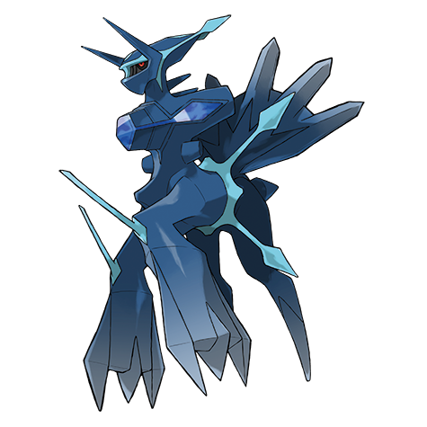
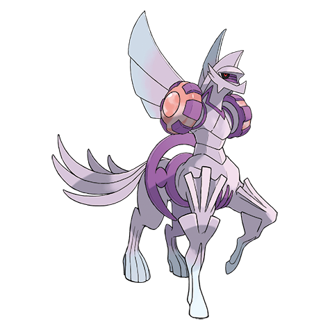
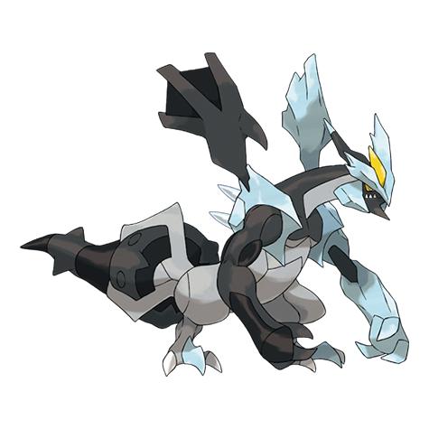
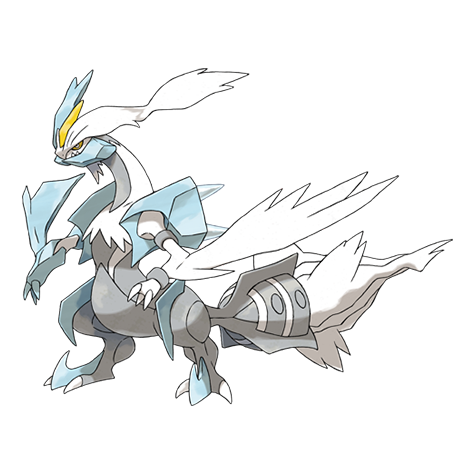
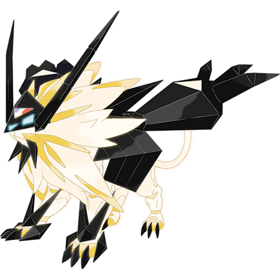
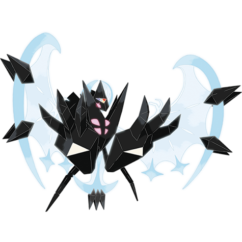
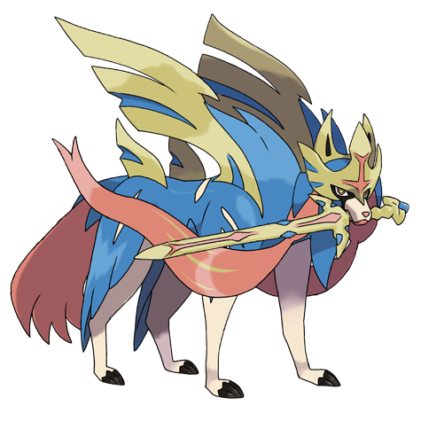

- アドベンチャーエフェクト（フィールド効果）は、特定のポケモンの専用技をバトルの外で使うと、一定時間だけボーナスが付く仕組みです
- 同時に使えるのは1つだけ。別の効果を使うと、前の効果に切り替わります
- 効果の延長は、同じコスト（ほしのすな＋アメ）をもう一度払って発動し直します
- 発動には、そのポケモンを進化・強化して専用技を覚えさせておく必要があります（オリジンフォルム・王の姿・メガシンカなど）
- 一覧は捕獲・探索系6種／バトル強化系3種／メガミュウツー系2種に分けています。時間＝1回の持続、コスト＝発動のたびに払う量です
捕獲・探索系（6種）
| ポケモン | 技 | 効果 | 時間 | コスト |
|---|---|---|---|---|
 ディアルガ（オリジン） | ときのほうこう | おこう・デイリーぼうけんのおこう・しあわせタマゴ・スターピースの残り時間を一時停止する | 6分 | ほしのすな5,000＋アメ5 |
 パルキア（オリジン） | あくうせつだん | 野生ポケモンを捕まえられる距離が広がり、遠くのポケモンも出現・タップできる（捕獲範囲 約2倍） | 10分 | ほしのすな5,000＋アメ5 |
 ブラックキュレム | フリーズボルト | 出会った野生ポケモンが動かなくなり、ジャンプ・攻撃・ボールはじきが無くなって捕まえやすい（捕獲率＋25％の目安） | 10分 | ほしのすな5,000＋アメ5 |
 ホワイトキュレム | コールドフレア | 捕獲リングの縮みが遅くなり、Excellentスローを狙いやすい（捕獲率＋50％の目安） | 10分 | ほしのすな5,000＋アメ5 |
 ネクロズマ（たそがれのたてがみ） | メテオドライブ | 昼に出るポケモンを周囲に呼び寄せる（昼限定の進化なども可能に） | 10分 | ほしのすな3,000＋アメ3 |
 ネクロズマ（あかつきのつばさ） | シャドーレイ | 夜に出るポケモンを周囲に呼び寄せる（夜限定の進化なども可能に） | 10分 | ほしのすな3,000＋アメ3 |
バトル強化系（3種）
| ポケモン | 技 | 効果 | 時間 | コスト |
|---|---|---|---|---|
 ザシアン（けんのおう） | きょじゅうざん | レイド・マックスバトルで味方の攻撃力を上げる（レイド 約＋10％／マックス 約＋5％） | 6分 | ほしのすな5,000＋アメ5 |
 ザマゼンタ（たてのおう） ザマゼンタ（たてのおう） | きょじゅうだん | レイド・マックスバトルで受けるダメージを減らす（レイド 約−10％／マックス 約−5％） | 6分 | ほしのすな5,000＋アメ5 |
 ムゲンダイナ ムゲンダイナ | ダイマックスほう | 手持ち全員のダイマックス技のレベルを＋1する（ザシアン・ザマゼンタを除く） | 10分 | ほしのすな5,000＋アメ30 |
メガミュウツー系（2種）
| ポケモン | 技 | 効果 | 時間 | コスト |
|---|---|---|---|---|
 メガミュウツーX メガミュウツーX | ばくれつパンチ | メガレイド・スーパーメガレイドで、メガシンカしたポケモンへの与ダメージが上がる | 10分 | ミュウツーのメガエナジー75＋アメ5 |
 メガミュウツーY メガミュウツーY | みらいよち | 捕まえる前に、強い個体（高個体値）の野生ポケモンを見分けられる | 12分 | ミュウツーのメガエナジー75＋アメ5 |
アドベンチャーエフェクト と メガシンカ／ゲンシカイキ の違い
| 項目 | アドベンチャーエフェクト | メガシンカ／ゲンシカイキ |
|---|---|---|
| 持続時間 | 6〜12分（1回ごと） | 8時間 |
| コスト | ほしのすな＋そのポケモンのアメ（発動のたび） | メガエナジー（メガシンカ／ゲンシカイキと共通） |
| 主なボーナス | フィールド効果＝捕獲補助・探索・バトル強化などのボーナス | 捕まえたとき同系統のアメ＋ボーナス、レイド・マックスで味方の技を約1.1〜1.3倍にブースト |
| 同時に使える数 | 1つだけ（別の効果を使うと切り替わる） | メガ枠の管理は別（フィールド効果とは無関係） |
| フィールド効果 | あり（これ自体がフィールド効果） | 基本なし。例外はメガミュウツーX／Yのみ |
※ 普通のメガシンカ（リザードン・ボスゴドラなど）やゲンシカイキ（カイオーガ・グラードン）にはフィールド効果はありません。メガシンカでフィールド効果を持つのはメガミュウツーX／Y だけです。
効果・技はゲーム内のアドベンチャーエフェクト仕様（Niantic ヘルプ、PokémonGO Hub／pogoevents ほか）で照合。時間・コストはユーザー提供の確定値（指示書 2026-11-21）に合わせています。
更新 2026-11-21